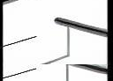
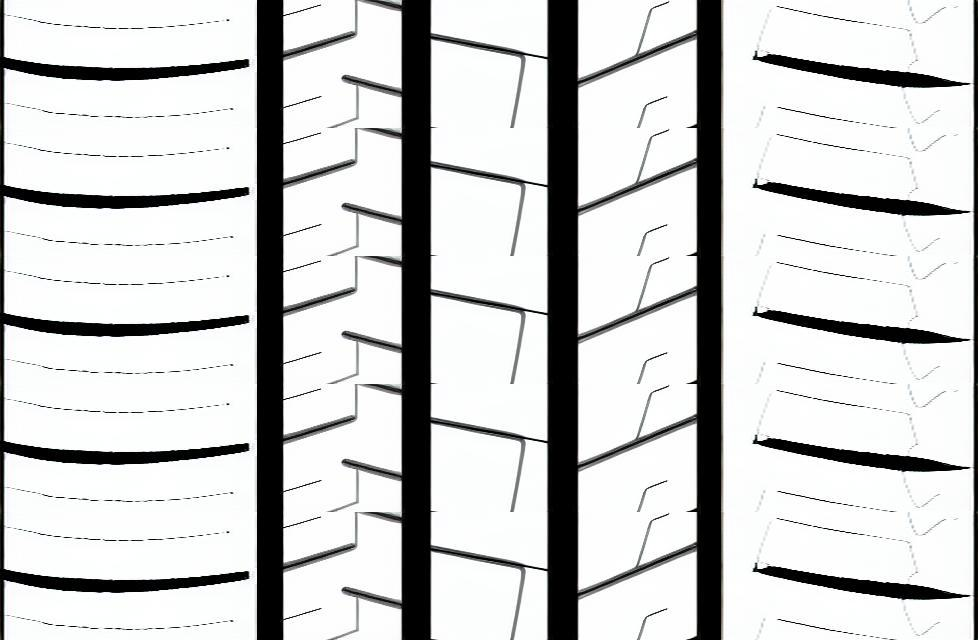

✅ 本函数负责
- 执行RIB图片的各种原子操作
- 按顺序水平拼接处理后的RIB和主沟图片
- 在大图两侧覆盖装饰花纹
基于ImageLineage血缘信息实现图片操作、拼接和装饰覆盖的完整流程
实现一个函数，根据 ImageLineage 血缘信息，完成图片操作 → 多图拼接 → 装饰覆盖的完整流程，最终生成大图。
def generate_large_image_from_lineage(
lineage: ImageLineage,
output_format: str = "png"
) -> str:
"""
根据血缘信息生成大图
Args:
lineage: ImageLineage - 包含完整血缘信息的对象
output_format: str - 输出格式，默认"png"
Returns:
str - base64编码的大图
"""
RibSchemeImpl 对象，按顺序执行其 operations 元组中的所有操作rib_image 字段| 操作名称 | 实现说明 |
|---|---|
NONE | 直接使用原图 |
FLIP_LR | PIL的Image.transpose(Image.FLIP_LEFT_RIGHT) |
FLIP | PIL的Image.rotate(180) |
LEFT_FLIP_LR | 截取左半部分 → 左右翻转 → 拼接成完整图 |
LEFT_FLIP | 截取左半部分 → 旋转180度 → 拼接成完整图 |
RESIZE_HORIZONTAL_2X/1.5X/3X | 横向拉伸对应倍数，保持纵向不变 |
LEFT/RIGHT | 截取左/右半部分 |
LEFT_2_3/RIGHT_2_3 | 截取左/右2/3部分 |
LEFT_1_3/RIGHT_1_3 | 截取左/右1/3部分 |
__RESIZE_AS_FIRST_RIB | 内部对齐操作，将当前图调整为第一张RIB的尺寸 |
ribs_scheme_implementation列表的顺序，依次水平拼接RIB图片decoration_width确定覆盖区域宽度decoration_opacity(0-255)from PIL import Image, ImageOps以 rib_number=5，无对称性要求的场景为例：

(如无法显示，请查看: tests/datasets/stitching/rib1.png)

(如无法显示，请查看: tests/datasets/stitching/rib2.png)

(如无法显示，请查看: tests/datasets/stitching/rib3.png)

(如无法显示，请查看: tests/datasets/stitching/rib4.png)

(如无法显示，请查看: tests/datasets/stitching/rib5.png)

(如无法显示，请查看: tests/datasets/stitching/except.png)